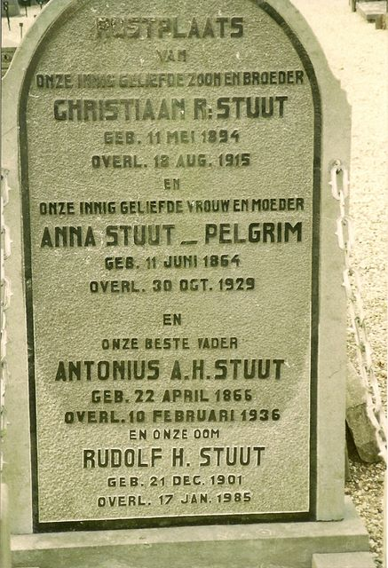

Christiaan R.Stuut, *11-05-1894, +18-08-1915, Anna Stuut-Pelgrim, *11-06-1864, +30-10-1929, Antonius A.H. Stuut, *22-04-1866, +10-02-1936, Rudolf H. Stuut, *21-12-1901, +17-01-1985 stam-F (Oude Alg.Begraafplaats Leerdam).
Eerste |
Vorige afbeelding |
Volgende afbeelding |
Laatste
